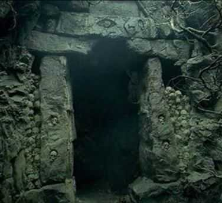
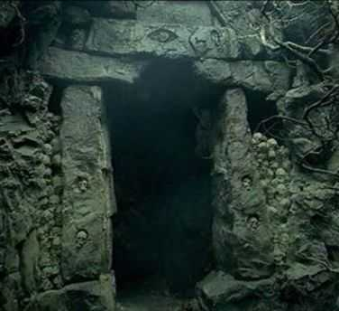

The Lord of the Rings Interactive Map

The Shire, in northwest Eriador, is a peaceful land bordered by the Brandywine River and the Tower Hills. Divided into four Farthings, its most famous village is Hobbiton, home to Bag End. Though quiet and remote, the Shire becomes key in Middle-earth’s fate through Frodo Baggins and the One Ring.

Bree is a small but bustling village located east of the Shire, where the Great East Road meets the Greenway. It is home to both Men and Hobbits, who live together peacefully. The Prancing Pony inn is a key landmark, known for its hospitality to travelers, including Rangers and those journeying through Middle-earth. Bree serves as a crossroads, linking the peaceful Shire to the more dangerous lands beyond.
The Old Forest, located on the eastern borders of Buckland, is an ancient and mysterious woodland filled with immense, twisted trees and winding paths. Known for its enchantments, it stands apart from the surrounding lands with a life of its own, sometimes hostile to intruders. Within its depths, the trees whisper and move, guided by the will of Old Man Willow, a malevolent sentinel of the forest. Despite its ominous reputation, the Old Forest plays a crucial role in the journey of the hobbits as they navigate its labyrinthine trails on their quest, confronting both its dangers and its wonders.

Rivendell, nestled in the hidden valley of Imladris, is a sanctuary of wisdom and beauty in Middle-earth. Surrounded by majestic mountains and cascading waterfalls, it serves as a refuge for elves and allies alike. Founded by Elrond Half-elven, Rivendell is famed for its serene halls and extensive libraries, preserving the histories and knowledge of ancient times. This haven of tranquility and learning becomes pivotal in Middle-earth's destiny, offering counsel and respite to the Fellowship of the Ring as they prepare for the formidable journey ahead.
Moria, also known as Khazad-dûm, lies deep beneath the Misty Mountains, once the grandest of the dwarven realms. Renowned for its vast halls and intricate tunnels, it was celebrated for its wealth and craftsmanship, particularly the mining of mithril, a precious metal. However, Moria's prosperity ended when the dwarves awoke the Balrog, a fearsome demon from the ancient world. Now a shadowy labyrinth filled with peril, it stands as a stark reminder of past glories and current dangers. Moria becomes a crucial stage in the Fellowship's journey, where bravery and sacrifice echo through its darkened halls.
Lórien, often referred to as Lothlórien, is a realm of ethereal beauty located in the heart of Middle-earth, home to the Galadhrim elves and led by the wise and powerful Lady Galadriel and Lord Celeborn. Hidden within the Golden Wood, it is bathed in the golden light of mallorn trees, offering a timeless sanctuary where the passage of time seems to slow. Its tranquil beauty and enchantment provide solace and strength to weary travelers, playing a vital role in rejuvenating the spirits of the Fellowship and preparing them for the trials that lie ahead.
The Anduin, the Great River of Wilderland, flows majestically through the heart of Middle-earth, carving a path from the Misty Mountains to the Bay of Belfalas. As the longest river, it serves as a vital artery for the lands it traverses, bordered by dense forests and open plains. Along its banks lie significant sites such as Lothlórien and the Argonath, the towering statues of ancient kings. The Anduin plays a crucial role as a travel route for the Fellowship, providing both a means of transport and a setting of significant encounters as they journey towards the dark lands.
Fangorn Forest, lying at the southeastern edge of the Misty Mountains, is an ancient and dense woodland steeped in mystery. Home to the Ents, the shepherds of the trees led by the wise Treebeard, it is a place where the forest itself seems alive with secrets and ancient wisdom. The trees of Fangorn have seen the passage of ages and have grown both watchful and wary of intruders. As the Fellowship's journey unfolds, Fangorn becomes a place of unexpected alliances and crucial turning points, where the power of nature and the past converge to influence the fate of Middle-earth.
Edoras, the capital of Rohan, sits majestically on a hill in the wide expanse of the Riddermark, surrounded by the windswept plains of the Westfold. It is crowned by the Golden Hall of Meduseld, where King Théoden presides over the Rohirrim, the horse-lords renowned for their cavalry. The city, a bastion of human strength and resilience, is fortified by timber palisades and offers sweeping views of the surrounding countryside. Edoras becomes a center of pivotal events as the forces of Middle-earth rally against the growing threat of Sauron, highlighting the valor and loyalty of its people in the face of doom.
Helm's Deep, a formidable fortress nestled in the deep valley of the White Mountains, stands as a bastion of hope and strength for the people of Rohan. Its key feature, the Hornburg, is fortified by towering walls and the natural defenses of the surrounding cliffs and deep ravine. Known for its impregnable position, Helm's Deep serves as a refuge in times of war, providing shelter and safety against overwhelming odds. During the War of the Ring, it becomes the setting for a legendary battle where courage and perseverance shine against the encroaching forces of darkness, leaving an indelible mark on the history of Middle-earth.

Isengard, once a lush and vibrant enclave in the northwestern region of Rohan, is dominated by the imposing tower of Orthanc, a masterpiece of unyielding black stone. Encircled by a ring of sheer rock walls, Isengard is transformed from a place of natural beauty to a fortress of iron and machinery under the control of Saruman the White. Its grounds, once green, are stripped and scorched, serving the wizard's dark ambitions. As Saruman's influence grows, Isengard becomes a central hub of his power, playing a critical role in the unfolding conflict, until nature and the Ents rise against the corruption, reclaiming its essence.
The Dead Marshes, a desolate and haunting expanse in Middle-earth, lie to the east of the Emyn Muil, sprawling with pools of stagnant water and treacherous bogs. Infamous for the eerie lights that dance over its fetid waters, the marshes are a grim reminder of ancient battles where countless lives were lost. The faces of the fallen are said to eerily appear beneath the surface, luring unwary travelers to their doom. As a critical passage on the journey to Mordor, the Dead Marshes test the resolve and fortitude of Frodo and Sam, enveloping them in a landscape steeped in sorrow and peril.
North Ithilien, a verdant region in Gondor, lies nestled between the rugged Ephel Dúath and the great Anduin River. Known for its lush forests and diverse flora, it serves as a stark contrast to the barren lands of Mordor just beyond its eastern border. Once a land of peace and beauty, it becomes a strategic refuge and hidden outpost for Gondor's Rangers, led by Faramir, as they resist the encroaching shadow of Sauron. North Ithilien provides solace and a fleeting glimpse of tranquility to Frodo and Sam on their arduous journey, embodying the enduring resilience of nature amidst the encroaching darkness.
Minas Morgul, once the proud city of Minas Ithil, now stands as a menacing and corrupted stronghold of evil in Middle-earth. Situated at the entrance to the Morgul Vale in the shadow of the Ephel Dúath, its towers emit a pale, ghostly glow that illuminates the dread that lies within. Taken by the Nazgûl and transformed into a bastion of the Dark Lord, it serves as a formidable base for launching assaults on Gondor. The city’s sinister presence looms as a constant reminder of the peril threatening the free peoples, as its haunting architecture and eerie atmosphere envelop those who venture near.

Minas Tirith, the majestic capital of Gondor, rises in seven concentric tiers upon the rocky spur of Mount Mindolluin. Known as the White City, it is renowned for its gleaming walls and the towering Citadel crowned by the White Tower of Ecthelion. A bastion of hope and defiance, Minas Tirith stands as a beacon of resilience against the encroaching darkness of Mordor. The city is a hub of culture and leadership, home to the Steward of Gondor, and plays a pivotal role in the War of the Ring. As the forces of Sauron gather, Minas Tirith becomes the site of valorous defense and heroism, safeguarding the heritage and future of Middle-earth.
 

The Paths of the Dead, a shadowy and foreboding underground passage, cut through the White Mountains, connecting Rohan and Gondor. Haunted by spirits of oath-breakers cursed to wander until their pledge to aid Gondor is fulfilled, this eerie route is avoided by the living. Marked by the Dimholt Gate, it leads into a world of darkness and whispers. During the War of the Ring, Aragorn bravely takes this path, invoking ancient promises to summon the Army of the Dead, using their spectral might in a decisive moment against Sauron's forces.
Pelargir, a prominent port city in Gondor, sits strategically at the mouth of the Anduin River, where it flows into the Bay of Belfalas. Known for its bustling docks and shipyards, Pelargir serves as a vital hub for trade and naval power, linking Gondor with distant lands. During the War of the Ring, the city plays a crucial role when Aragorn and the Army of the Dead liberate it from Corsair invaders, securing its ships to bolster the forces defending Minas Tirith. Pelargir's liberation marks a turning point, demonstrating the reach and impact of Gondor's resilience and alliances.
The Grey Havens, known as Mithlond in Elvish, is a serene and beautiful port city located on the western shores of Middle-earth in the region of Lindon. Its harbors are the starting point for Elven ships setting sail across the Sea to the Undying Lands, marking the end of the Elves' time in Middle-earth. Founded by Círdan the Shipwright, the Havens serve as a place of farewell and transition, steeped in melancholy and hope. As the Third Age draws to a close, the Grey Havens become a symbol of the enduring legacy of the Elves and the bittersweet passage of the old world into myth.
Mount Doom, or Orodruin, is the fiery, volcanic peak situated in the heart of the dark land of Mordor. It is the central and most critical feature of Sauron's domain, where the One Ring was originally forged in its searing fires. The mountain's constant eruptions and ominous presence create a landscape of despair and danger. During the climax of the War of the Ring, Frodo and Sam undertake their perilous journey to Mount Doom, aiming to destroy the Ring in its fiery chasm. Its destruction marks the overthrow of Sauron, bringing hope and renewal to Middle-earth.
The Lord of the Rings Interactive Map